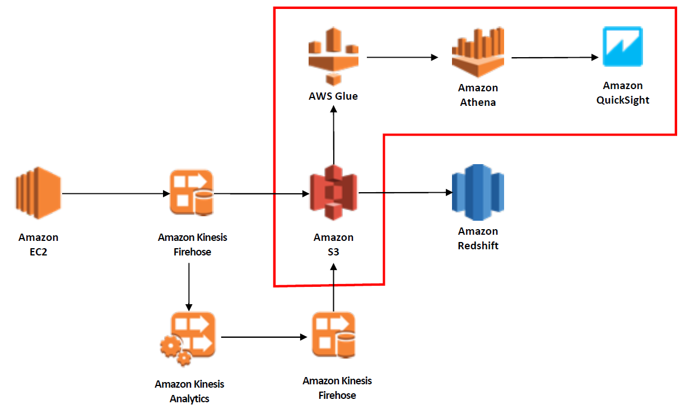

Lab01에서 구성한 SAP HANA Cluster를 모니터링 하고 운영하는 방법을 배워볼 예정입니다.

Multi AZ 환경에서 High Availability Cluster를 구성하게 될 경우, Application Server 및 HANA Database 가 사용하는 VIP는 VPC CIDR 밖에 있는 Overlay IP를 사용합니다. 이것을 다른 VPC 혹은 OnPremise 환경에서 접속하기 위해서는 구성한 리전에 Transit Gateway를 구성하여, VPC 및 VPN/Direct Connect 를 연결하고, Overlay IP를 라우팅 테이블에 등록해야 합니다. CloudFormation을 통해 가상의 Custom VPC 환경을 만들고, Overlay IP를 통해 HANA Database에 연결하는 실습을 진행할 예정입니다.